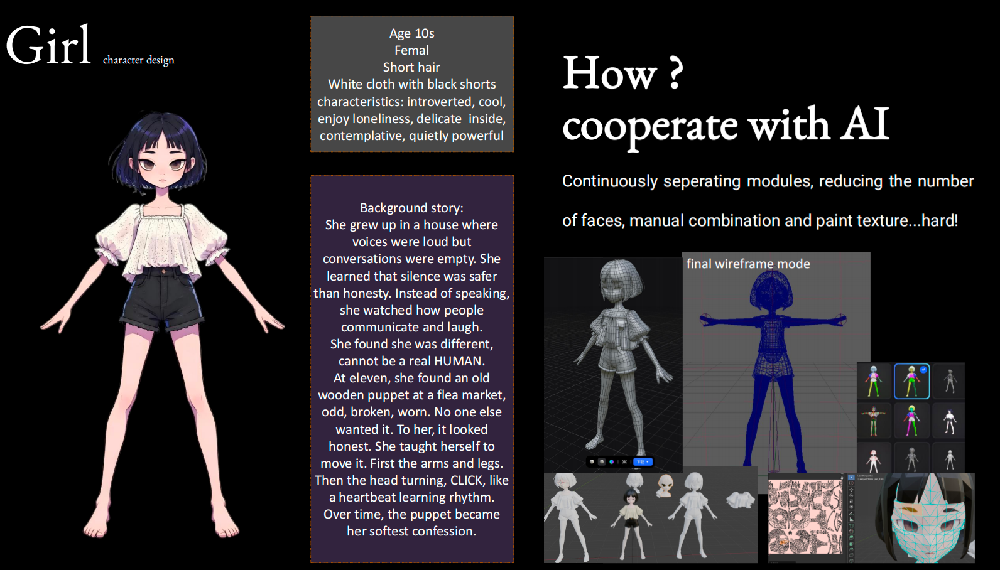
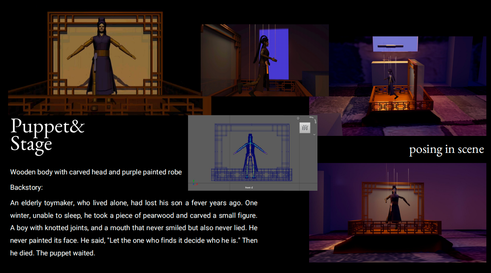
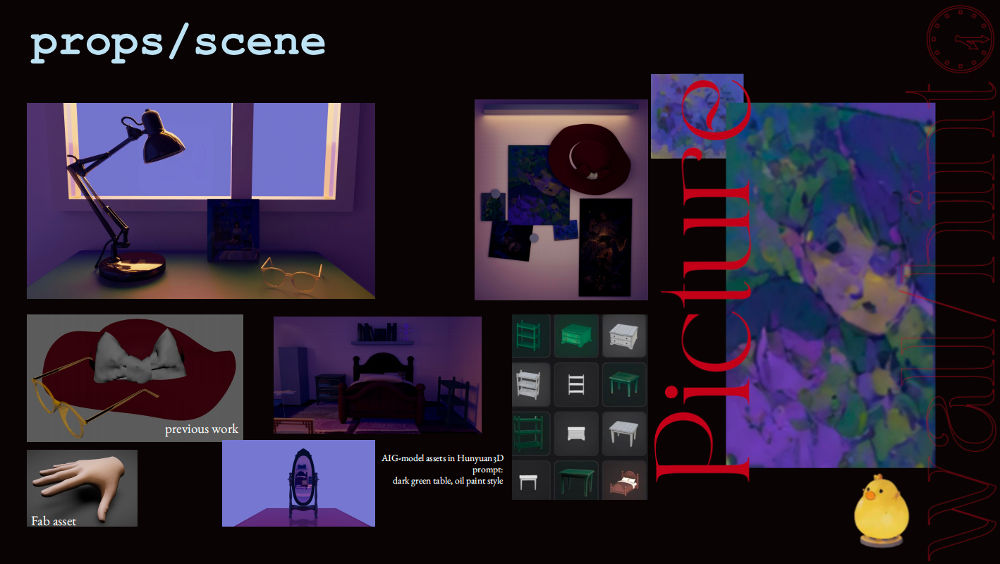
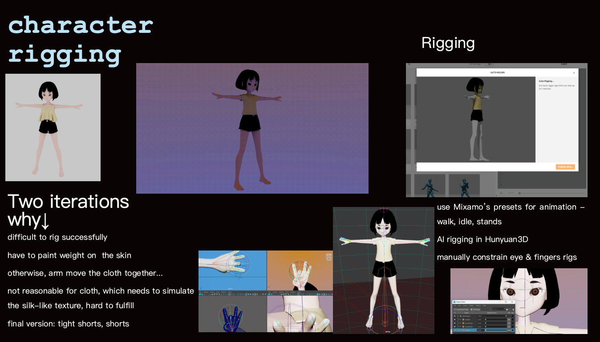
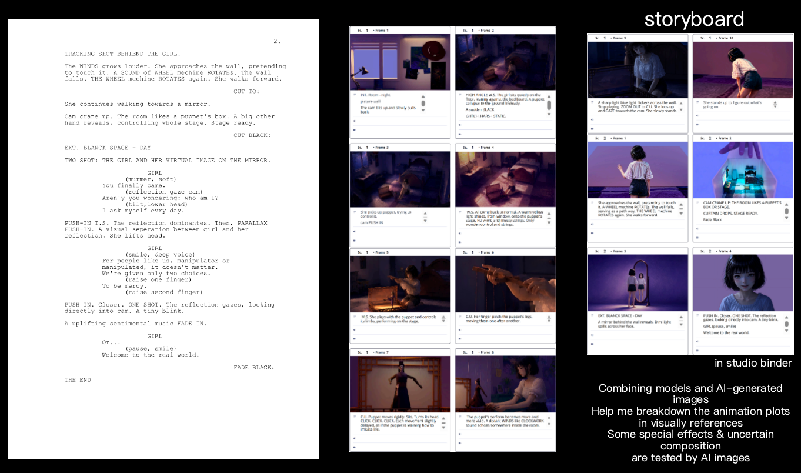
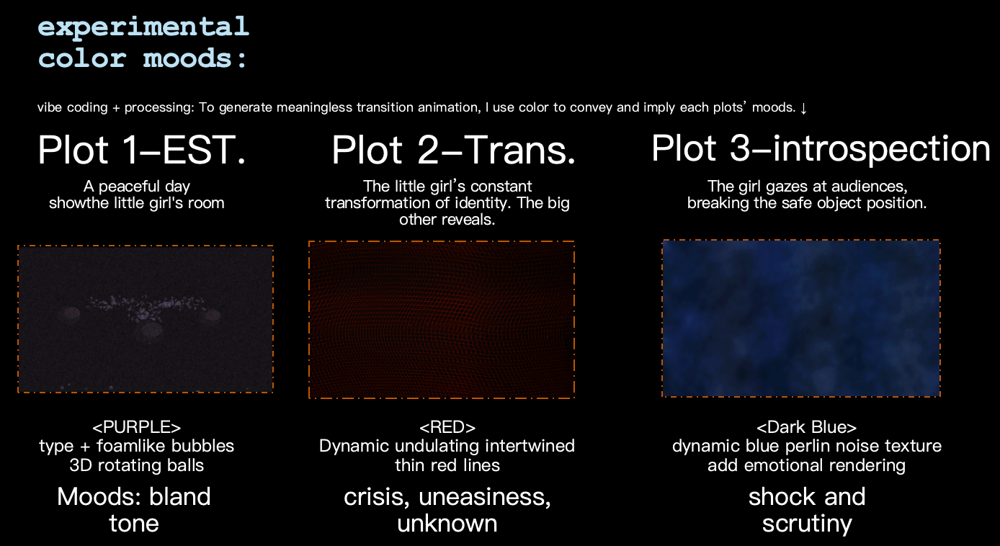
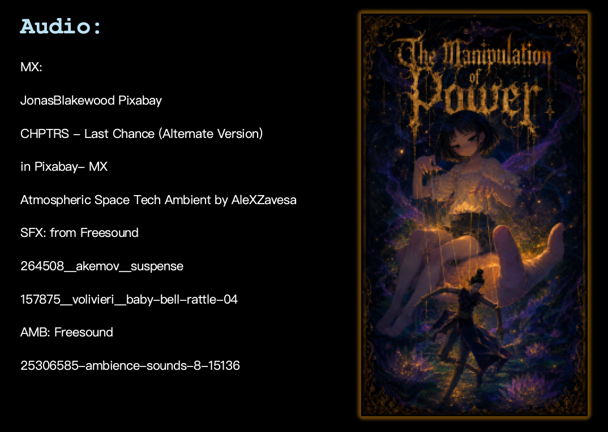
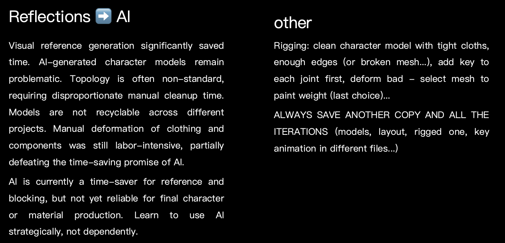
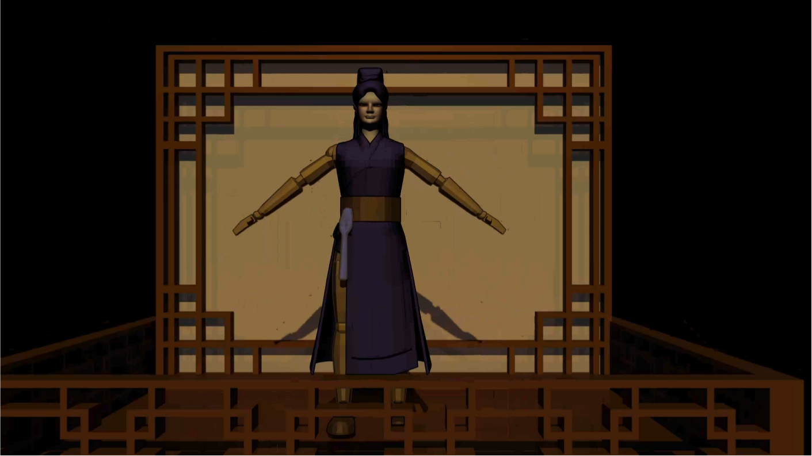
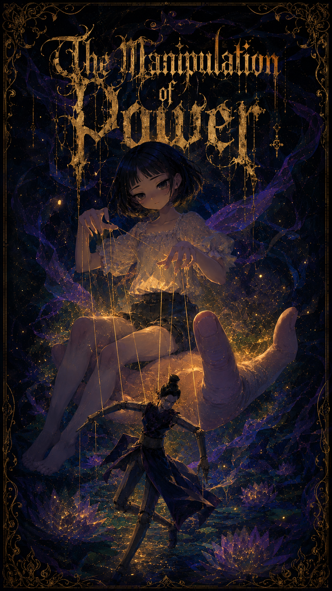

The Manipulation of Power
An experimental animated short exploring a puppet-like character and the visual language of control.
A world of puppets
The work begins with an imagined puppet show: a little girl pulls the strings, while she too may be manipulated. Eventually, the performance breaks the fourth wall.
The central metaphor is a world that functions as a vast puppet theatre. We are spectators, manipulated actors and even part of the stage.
Genre: drama, psychological horror and experimental animation.
A girl, alone in her room, manipulates a puppet with strings, slowly teaching it to mimic life. A sudden noise disturbs her performance. She approaches its unknown source, and the room itself transforms. A hidden passage opens into a blank, mirror-lit space. There, her reflection speaks directly to her and to the camera, questioning manipulation, mercy and choice. The line between puppeteer and puppet begins to blur.
From character to final cut
Character design, rigging, props and scene building, script and storyboard, experimental cut-scenes and audio, editing and reflection.

Character design

Puppet design

Props & scene

Rigging

Script & storyboard

Experimental cut-scenes

Audio

Editing & reflections
Character & stage

Character Girl

Puppet study.
The film
demo
